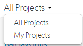
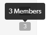
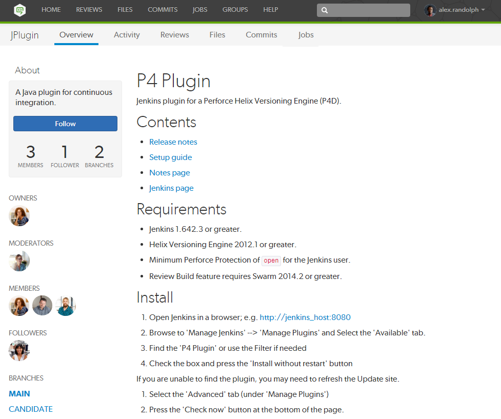

|

|
A Swarm project is made up of a group of Helix Core users who are working together on one or more codelines within the Helix server. A project's definition includes one or more branchesA branch in Perforce is a set of related files that exist at a specific location in the Perforce depot as a result of being copied to that location, as opposed to being added at that location. of code, and optionally a jobA job is a component of the Helix Versioning Engine's defect tracking system and describes work to be done, such as a bug fix or improvement request. Associating a job with a changelist records which changes fixed the reported problem or added the requested improvement. filter, automated test integration, and automated deployment. This section provides an introduction to the interactions users have with projects. See the Projects chapter for details on managing projects.
Projects are listed on the Swarm home page. Anonymous users see a list of all public projects:
Logged-in users can choose to display all projects or just the projects they are a member of by clicking on the dropdown above the projects list:

If you are an owner of a project but not a member of that project, the project will not appear in your My Projects list. This allows you to administer a large number of projects but only be a member of the projects you want to see in your My Projects list.
The number in the icon to the right of the project name displays the total number of members for the project. Hover your mouse over the icon to display a tooltip with the number of members for the project.

View a project by doing one of the following:
https://myswarm.url/projects/project-name The project Overview tab shows a description of the project.
The project's Overview tab is only displayed if there is a README.md in the project's mainline.
The README.md file can contain Markdown text, allowing a formatted description of the project to be provided. See Markdown in projects for a description of the type of formatting that is supported. See Mainline branch identification for details on how to configure the mainline of a project.

The following information is displayed in the project sidebar:
The project Activity tab shows the activity stream for the project
The following information is displayed in the project sidebar:
The project Reviews tab shows a list of code reviews specific to the project.
For more details on browsing, filtering, and searching reviews, see Review list.
The project Files tab shows a list of files for the project, starting with a folder view representing each branch. Branches are designated with the branch icon .
The project's main branch, identified by using a name such as main, mainline, master, trunk, is sorted to the top of the list of branches and appears in bold. The list of names can be configured, see Mainline branch identification for details.
For more information on browsing files, see Files.
The project Commits tab shows a list of changes made to the project.
For more details on history browsing, see Commits.
The project Jobs tab shows a list of jobs associated with the project.
The Jobs tab is only displayed when the project configuration includes a job filter. See Add a project for details.
For more details on browsing and searching jobs, see Jobs.
Private projects, introduced in Swarm 2016.2, provide a way to make specific projects and their activity less visible to Swarm users. When a project is made private, only the projects owners, moderators, and members, plus users with super privileges in the Helix server, can see the project, its activity streams, and ongoing reviews.
If you are logged in as an owner, moderator, or member of a private Swarm project, that project appears on the Swarm home page with an eye icon to indicate that it is private and has limited visibility:
Similarly, the eye icon appears beside the project's title when viewing the project. When you hover your mouse over the eye icon, a tooltip appears indicating that this project is indeed private.
The following are important caveats regarding private projects:
| |
|